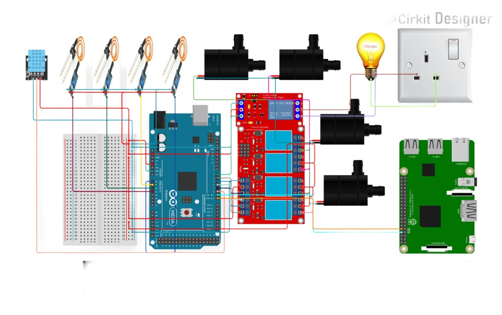

Introduction
The AI-Powered Irrigation System is an advanced solution designed to optimize water usage in agricultural fields by leveraging artificial intelligence. This system analyzes weather forecasts, soil moisture levels, and crop data in real-time to make informed decisions about irrigation schedules.
Working Principle
The AI-Powered Irrigation System operates by collecting data from various sensors and using AI algorithms to determine the optimal irrigation schedule. The key components and steps involved are:
- Soil Moisture Sensor: Measures the moisture content in the soil and provides real-time data to the system.
- Weather Forecasting: Integrates with weather forecasting APIs to gather information about upcoming weather conditions, such as rainfall and temperature.
- AI Model: Uses machine learning algorithms to analyze the collected data and predict the optimal irrigation schedule based on soil moisture levels, weather forecasts, and crop requirements.
- Water Pump: Automatically activates the water pump to irrigate the fields when the AI model determines that irrigation is necessary.
- Remote Monitoring: Allows users to monitor and control the irrigation system remotely through a web interface or mobile app.

The system operates as follows:
- The soil moisture sensor continuously monitors the moisture levels in the soil.
- The system collects weather data from forecasting APIs to understand upcoming weather conditions.
- The AI model analyzes the collected data and predicts the optimal irrigation schedule.
- When the AI model determines that irrigation is necessary, it activates the water pump to irrigate the fields.
- Users can monitor and control the system remotely, making adjustments as needed based on real-time data.
Components Used
- Raspberry Pi 3: Acts as the central processing unit, running the AI model and controlling the system.
- Arduino Mega: Interfaces with the sensors and controls the water pump based on commands from the Raspberry Pi.
- Soil Moisture Sensor: Measures the moisture content in the soil and provides real-time data to the system.
- AI Model: Trained machine learning model that predicts the optimal irrigation schedule based on collected data.
- Water Pump: Automatically activates to irrigate the fields when the AI model determines that irrigation is necessary.
- DHT11 Sensor: Measures temperature and humidity levels in the environment.
- Relays: Control the activation of the water pump and other connected devices.
- AC Bulb: Used as an indicator to show the status of the system.
Applications
- Water Conservation: Minimizes water wastage by optimizing irrigation schedules based on real-time data and AI predictions.
- Improved Crop Yield: Ensures that crops receive the optimal amount of water, promoting healthy growth and improving crop yield.
- Cost-Effective: Reduces water expenses by preventing over-irrigation and ensuring efficient water usage.
- Remote Monitoring: Enables users to monitor and control the irrigation system remotely, providing convenience and flexibility.
- Scalable for Large-Scale Agricultural Use: Can be scaled to cover large agricultural fields, making it suitable for commercial farming operations.
Future Enhancements
- Integration with Weather Forecasting APIs: Enhance the system by integrating with more advanced weather forecasting APIs to improve the accuracy of irrigation predictions.
- Advanced Data Analytics: Implement advanced data analytics to provide insights into crop health, soil conditions, and irrigation efficiency.
- Solar-Powered System: Develop a solar-powered version of the system to ensure sustainable energy usage and reduce reliance on external power sources.
- Mobile App Development: Create a dedicated mobile app for enhanced user experience, allowing users to monitor and control the system from their smartphones.
- Integration with Smart Home Systems: Integrate the irrigation system with existing smart home systems for seamless automation and control.
- Machine Learning Model Improvements: Continuously improve the AI model by incorporating more data and refining the algorithms to enhance prediction accuracy.